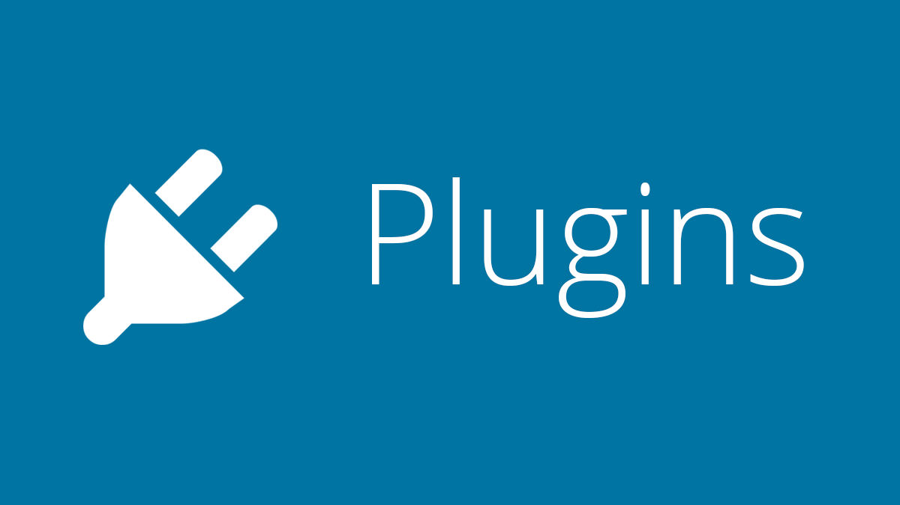

Proyecto final ASIX
CI/CD JENKINS
Miguel Amorós
CI/CD
Las siglas CI/CD se refiere al término de Continuous Integration / Continuous Deployment.
- La CI/CD es un método para distribuir aplicaciones a los clientes mediante el uso de la automatización en las etapas del desarrollo de aplicaciones:
- Integración continua
- Distribución continua
- Implementación continua
ETAPAS CI/CD

EJEMPLOS
- Jenkins
- Gitlab
- TeamCity
- Travis CI
- Buddy
- Puppet Enterprise
- ...
METODOLOGÍA ÁGILE

Ventajas
- Adaptabilidad
- Entrega rápida de software funcional
- Poca o nula planificación
- Flexibilidad para los desarrolladores
- Promueve el trabajo en equipo y la capacitación
JENKINS
SOBRE JENKINS...
- Desarrollado originalmente con el nombre Hudson (2004) en Sun Microsystems
- Lanzamiento en 2011
- Servidor open source de integración continua (CI)
- Software de automatización más usado de todos
- Escrito en Java
- +14.000 plugins para soportar la automatización de todo tipo de tareas
CARACTERÍSTICAS
- Testar el software.
- Revisar las métricas de calidad del software
- Enviar las modificaciones del software
- Automatizar la compilación del software o su despliegue
- Notificar debidamente a los desarrolladores o al equipo de errores
- Generar o visualizar la documentación de un proyecto
PIPELINES
- Conjunto de prácticas para incorporar la automatización continua y el control permanente en todo el ciclo de vida.
- Desde las etapas de integración y prueba, hasta las de distribución e implementación en el entorno elegido.

CARACTERÍSTICAS PIPELINES
- Integración y verificación
- Automatización
- Cultura DevOps
- Contenedores
JOBS
- La base de Jenkins son las tareas Jobs
- Se indica todo el proceso hasta llegar a un build final estable.
- Cada integración se verifica compilando el código fuente
- Se pasan las pruebas y métricas de calidad para detectar los errores
- Sabemos el estado del software en todo momento
JENKINSFILE
- El pipeline del proyecto se declara en un fichero, se almacena y se versiona junto con el código en un fichero comúnmente llamado Jenkinsfile

PLUGINS
- Fragmento o componente de código hecho para ampliar las funciones de una herramienta o de un programa.

- Docker plugin
- GitHub plugin
- Blue Ocean plugin
- Google Kubernetes Engine plugin
INSFRAESTRUCTURA
- Instancia AWS AMAZON EDUCATE
- AMI Fedora 29
- IP pública elástica (http://18.209.188.35:9090/)
- Bitnami Cloud con Jenkins-Debian (http://34.65.131.122:8080/)
- Repositorio GitHub
- Google Kubernetes Engine (GKE)
INSTALACIÓN JENKINS
- Es un servidor de automatización multiplataforma
- Descargar Jenkins
- Instalación paso a paso
- Previamente es necesario instalar Java
- Navegador compatible
CONFIGURACIÓN JENKINS
- Entrar al navegador (http://18.209.188.35:9090/)
- Configurar el admin inicial
- Instalar plugins
- Crear usuario administrador
- Configuración paso a paso
ESQUEMA EJERCICIOS

FIN
¡Gracias por vuestra asistencia!